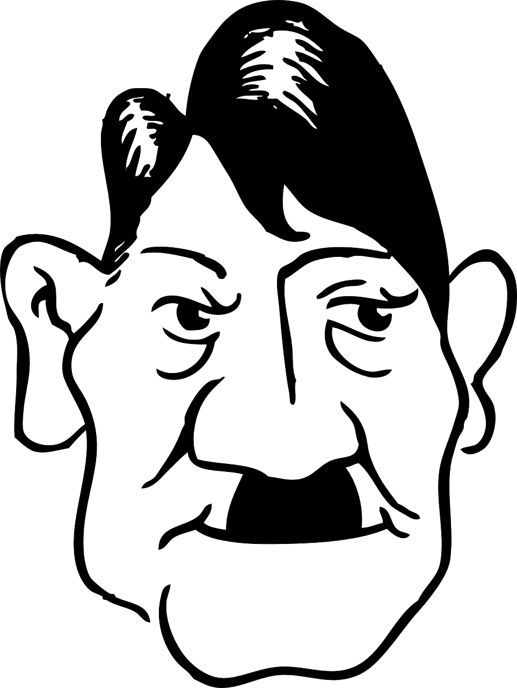

¿Cómo es posible que sucediera el Holocausto?
Los nazis intentaron encubrir sus crímenes en el Holocausto y la negación del genocidio persiste hasta nuestros días. Los estudiosos afirman que los monumentos conmemorativos (como este en la antigua estación de tren de Pithiviers, Francia, desde donde se enviaba a los judíos a los campos de exterminio) son esenciales para luchar contra el antisemitismo.
Seis millones de judíos asesinados. Millones más despojados de sus medios de vida, de sus comunidades, de sus familias e incluso de sus nombres. Los horrores del Holocausto se expresan a menudo en cifras que transmiten la magnitud del intento de la Alemania nazi de aniquilar a los judíos de Europa.
Los nazis y sus colaboradores, bajo la dirección de Adolf Hitler, asesinaron a millones de personas a las que consideraban inferiores, como testigos de Jehová, homosexuales, discapacitados, eslavos, romaníes y comunistas. Sin embargo, los historiadores utilizan el término "Holocausto" (también llamado Shoah, o "desastre" en hebreo) para referirse estrictamente a los judíos europeos asesinados por los nazis entre 1933 y 1945.
Ninguna estadística puede captar el verdadero terror de la matanza sistemática de un grupo de seres humanos y, dada su enormidad y brutalidad, el Holocausto es difícil de entender. ¿Cómo pudo un político elegido democráticamente incitar a toda una nación al genocidio? ¿Por qué la gente permitió que sucediera a plena vista? ¿Y por qué algunos siguen negando que haya ocurrido?
Los judíos europeos antes del Holocausto
En 1933, más de nueve millones de judíos vivían en todo el continente y en todas las naciones europeas. Algunos países garantizaban a los judíos la igualdad ante la ley, lo que les permitía formar parte de la cultura dominante. Otros, especialmente en Europa del Este, mantenían la comunidad judía estrictamente separada.
La vida judía florecía, pero los judíos europeos también se enfrentaban a un largo legado de discriminación y chivos expiatorios. Los pogromos (disturbios violentos en los que los cristianos aterrorizaban a los judíos) eran habituales en toda Europa del Este. Los cristianos culpaban a los judíos de la muerte de Jesús, fomentaban mitos sobre una oscura cábala que controlaba las finanzas y la política mundiales y afirmaban que los judíos traían enfermedades y delincuencia a sus comunidades.
-
El ascenso de Adolf Hitler
Hizo falta un hombre, Adolf Hitler, para convertir siglos de antisemitismo casual en genocidio. Hitler empezó su ascenso al poder en la década de 1920 como líder del Partido Nacionalsocialista Obrero Alemán, también conocido como partido nazi.
Hitler aprovechó una marea de descontento y malestar en Alemania, que se estaba reconstruyendo lentamente tras perder la Primera Guerra Mundial. La nación se había hundido política y económicamente, y debía fuertes sanciones en virtud del Tratado de Versalles. El partido nazi culpó a los judíos de los problemas de Alemania y prometió devolver a la nación su antigua gloria.
El partido Nazi consiguió ser el más votado en las elecciones del parlamento alemán en 1932. En 1933, tras otras dos rondas electorales Adolf Hitler fue nombrado canciller, el segundo cargo más alto de la nación. Menos de un año después, el presidente alemán murió y Hitler se hizo con el control absoluto del país.
 Los inicios del régimen nazi
Inmediatamente después de llegar al poder, los nazis promulgaron una serie de leyes destinadas a excluir a los judíos de la vida alemana, definiendo el judaísmo en términos raciales y no religiosos. Comenzando con una ley que prohibía a los judíos el acceso a la función pública, culminaron con leyes que prohibían a los judíos la ciudadanía alemana y los matrimonios mixtos con no judíos.
No se trataba sólo de asuntos internos: Hitler quería expandir su régimen y, en 1939, Alemania invadió Polonia. Esto marcó el comienzo de la Segunda Guerra Mundial y la expansión de las políticas antisemitas de los nazis.
Las autoridades alemanas obligaron rápidamente a cientos de miles de judíos polacos a vivir hacinados en guetos y, con la ayuda de la población local y del ejército alemán, fuerzas especialmente entrenadas llamadas Einsatzgruppen [Grupos Operativos en alemán] comenzaron a fusilar sistemáticamente a judíos y a otras personas que el régimen consideraba indeseables. En sólo nueve meses, estas unidades móviles de asesinato fusilaron a más de medio millón de personas en un "Holocausto a balazos" que continuaría durante toda la guerra.
Pero Hitler y sus oficiales nazis no se contentaron con leyes discriminatorias o fusilamientos masivos. En 1942, acordaron buscar una "solución final" a la existencia de los judíos europeos: enviarían a millones de judíos que quedaban en los territorios que controlaban (prácticamente todo el continente entre los Pirineos y el frente ruso) hacia el este, a campos de exterminio donde serían obligados a realizar trabajos forzados y finalmente asesinados.
Genocidio a plena vista
Al caracterizar sus acciones como la "evacuación" de judíos de territorios que por derecho pertenecían a alemanes no judíos, la operación nazi se llevó a cabo a plena vista. Aunque miles de personas no judías rescataron, escondieron o ayudaron de alguna otra forma a los que eran objeto del Holocausto, muchas otras permanecieron indiferentes o colaboraron con los nazis.
Con la ayuda de funcionarios locales y civiles simpatizantes, los nazis acorralaron a los judíos, los despojaron de sus posesiones personales y los encarcelaron en más de 44 000 campos de concentración y otros lugares de reclusión en toda Europa. Se animó a los no judíos a traicionar a sus vecinos judíos e instalarse en las casas y negocios que abandonaban.
Dachau, inaugurado cerca de Munich en 1933, fue el primer campo de concentración. Otros cinco (Auschwitz-Birkenau, Chelmno, Belzec, Sobibor y Treblinka) fueron designados centros de exterminio, donde la mayoría de los judíos eran asesinados inmediatamente después de su llegada.
Los asesinatos se llevaban a cabo como si se tratara del trabajo en cadena de una fábrica: los transportes masivos de judíos eran descargados de los vagones de tren y "seleccionados" en grupos en función del sexo, la edad y la aptitud percibida. Los seleccionados para ser asesinados eran llevados a zonas de espera donde se les ordenaba que dejaran a un lado sus pertenencias y se desnudaran para ser "desinfectados" o duchados.
En realidad, eran conducidos a cámaras de exterminio especialmente diseñadas en las que los oficiales bombeaban gas monóxido de carbono letal o un pesticida de cianuro de hidrógeno llamado Zyklon B que envenenaba a sus víctimas en cuestión de minutos.
Las primeras víctimas del Holocausto fueron enterradas en fosas comunes. Más tarde, en un intento de mantener los asesinatos en secreto, los cadáveres fueron incinerados en grandes crematorios. Algunos judíos fueron obligados a participar en los asesinatos, y luego ellos mismos fueron ejecutados para mantener el secreto. Los nazis robaban la ropa, los empastes dentales, las pertenencias e incluso el pelo de las víctimas.
-
La vida en los campos de concentración durante el Holocausto
Los que no eran elegidos para morir eran humillados ritualmente y obligados a vivir en condiciones miserables. A muchos les tatuaban números de identificación y les rapaban el pelo. El hambre, el hacinamiento, el exceso de trabajo y la falta de saneamiento provocaron enfermedades rampantes y muertes masivas. Las tácticas de tortura y los brutales experimentos médicos hicieron de los campos un horror indescriptible.
"No es posible caer más bajo que esto; ninguna condición humana es más miserable que ésta, ni podría concebirse que lo fuera", escribió Primo Levi, superviviente de Auschwitz, en sus memorias de 1947. "Ya nada nos pertenece... si hablamos, no nos escucharán, y si escuchan, no entenderán. Incluso nos quitarán nuestro nombre".
Pero a pesar de las penurias casi inconcebibles, algunas consiguieron resistir. "Nuestro objetivo era desafiar a Hitler, hacer todo lo posible por vivir", recuerda Helen K., superviviente de Majdanek y Auschwitz, en un testimonio oral de 1985. "Él [quería] que muriéramos, y nosotros no queríamos complacerle".
Los judíos se resistieron al Holocausto de diversas formas, desde esconderse hasta sabotear las operaciones de los campos o participar en levantamientos armados en guetos y campos de concentración. Otras formas de resistencia eran más silenciosas, como robar comida, llevar a cabo servicios religiosos prohibidos o simplemente intentar mantener un sentido de la dignidad.

Las secuelas del HolocaustoLas secuelas del Holocausto
A medida que la Segunda Guerra Mundial llegaba a su fin en 1944 y 1945, los nazis intentaron encubrir sus crímenes, quemando documentos, desmantelando los campos de exterminio y obligando a los prisioneros que quedaban a emprender brutales marchas de la muerte para escapar del avance de los Aliados.
No lo consiguieron: al liberar franjas de Europa, las tropas aliadas entraron en campos repletos de cadáveres y, en algunos casos, de víctimas hambrientas y enfermas. Las pruebas recogidas en estos campos se convertirían en la base de los Juicios de Nuremberg, el primer tribunal internacional de crímenes de guerra de la historia.
Después de la guerra, las consecuencias del Holocausto se hicieron evidentes poco a poco. Sólo uno de cada tres judíos europeos sobrevivió y, aunque las estimaciones varían, los historiadores creen que al menos seis millones de judíos fueron asesinados. Entre ellos, se calcula que 1,3 millones fueron masacrados por los Einsatzgruppen; aproximadamente un millón fueron asesinados sólo en Auschwitz-Birkenau.
Muchos supervivientes no tenían adónde ir. Polonia tenía la mayor población judía de Europa antes de la guerra, pero perdió el 93% de esa población en sólo cinco años. Pueblos y comunidades enteros fueron arrasados y las familias se dispersaron por toda Europa. Etiquetados como "personas desplazadas", los supervivientes intentaron reconstruir sus vidas. Muchos abandonaron Europa para siempre, emigrando a Israel, Estados Unidos u otros lugares.
Negación del Holocausto
A pesar de la enormidad de las pruebas, algunas personas sembraron desinformación sobre el Holocausto, mientras que otras negaron que hubiera ocurrido. La negación del Holocausto persiste hasta nuestros días, a pesar de que se considera una forma de antisemitismo y está prohibida en varios países.
¿Cómo contrarrestar el odio? "Educar sobre la historia del genocidio del pueblo judío y otros crímenes nazis ofrece una sólida defensa contra la negación y la distorsión", concluyen los autores de un informe de las Naciones Unidas de 2021 sobre la negación del Holocausto.
Aunque el número de supervivientes del Holocausto ha disminuido, sus testimonios ofrecen pruebas cruciales de los horrores del Holocausto.
"Las voces de las víctimas (su incomprensión, su desesperación, su poderosa elocuencia o su torpeza impotente) pueden sacudir nuestra bien protegida representación de los hechos", afirmó Saul Friedländer, historiador que sobrevivió al Holocausto y cuyos padres fueron asesinados en Auschwitz, en una entrevista concedida en 2007 a Dissent Magazine. "Pueden pararnos en seco. Pueden restaurar nuestro sentido inicial de incredulidad, antes de que el conocimiento se apresure a sofocarlo".